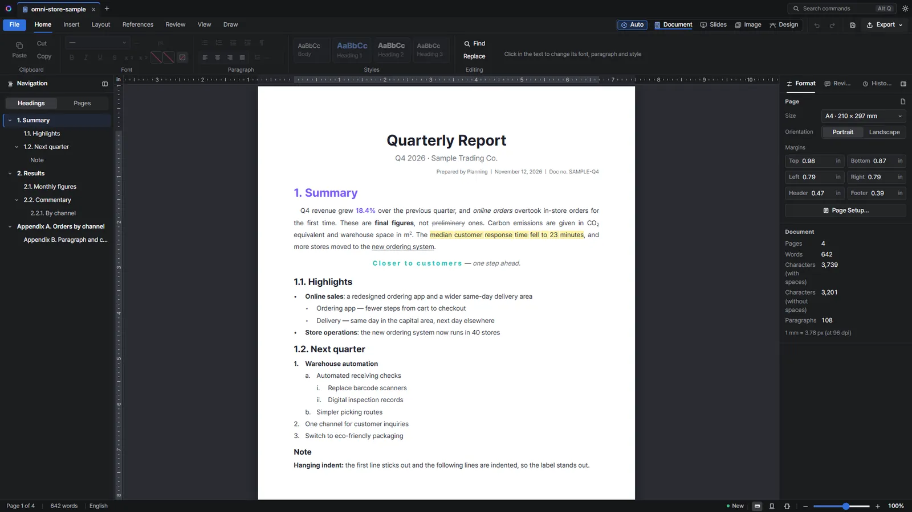
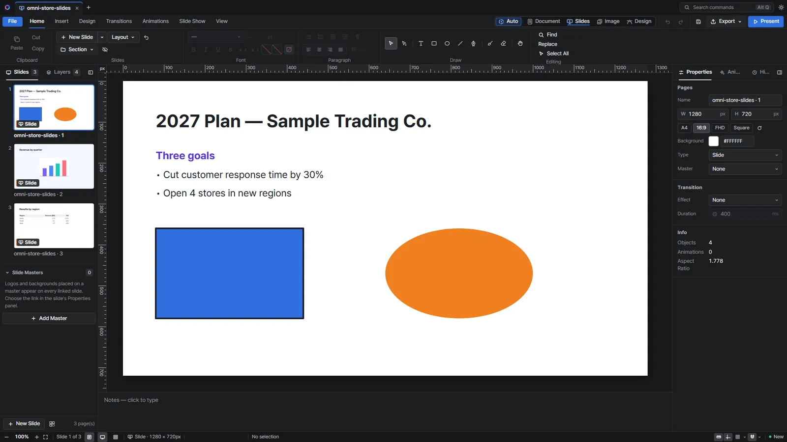
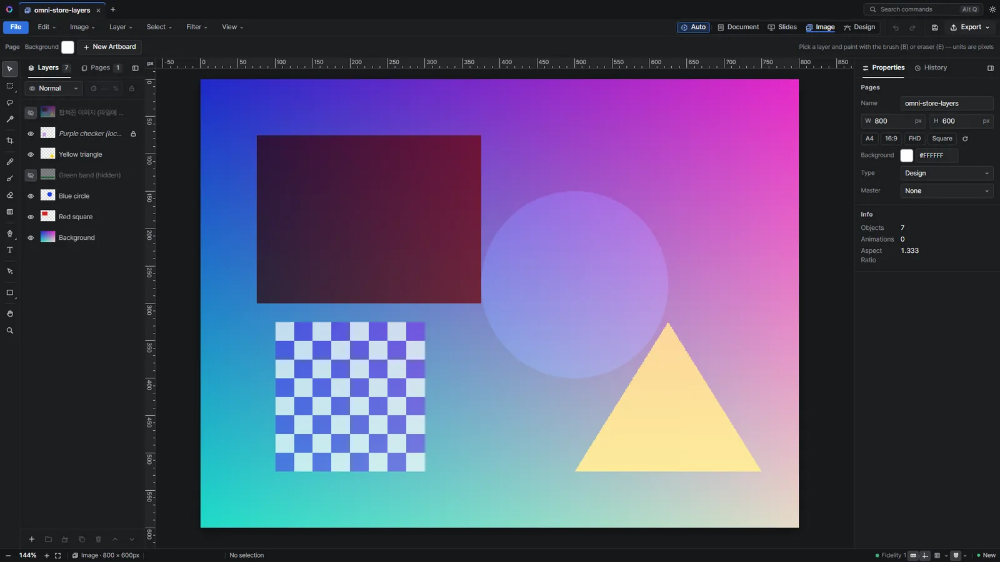
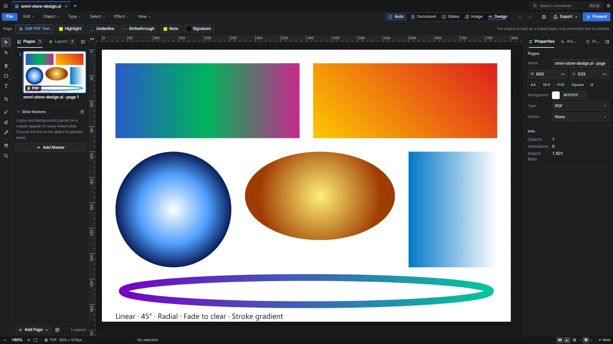
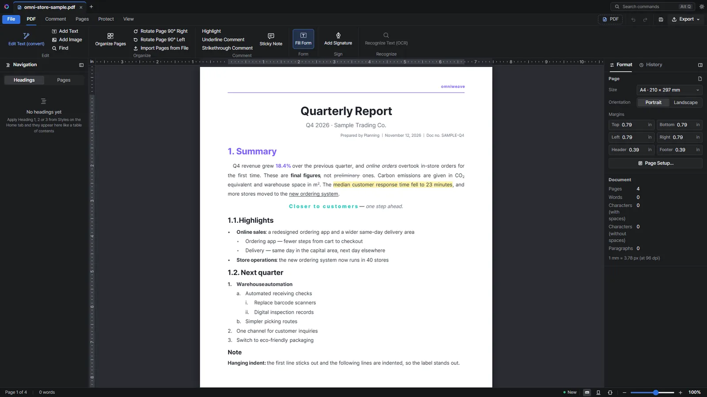
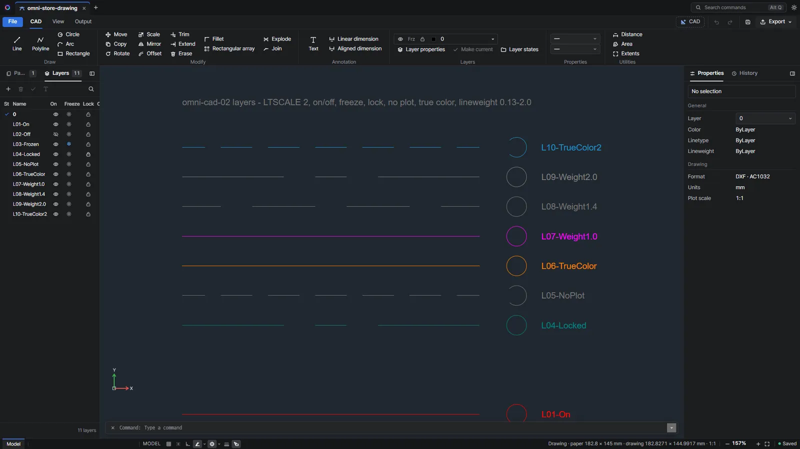

Files arrive in every format.Your work lives in one .omw.
Open anything on one canvas and edit it there. When it's time to send, export back to the original format.
- Openfiles as you received them
- Keepall the work in one .omw
- Exportback to the original format
Goalmake .omw a shared working file anyone can read and write
Tour
One app.
Just switch modes.
Every screen below is the real app. Pick a tab.

DOCX · HWPX · DOC · HWP
A document editor with a heading outline and page setup
- Mode switcher
- Heading outline
- Page size and margins

PPTX · PPT
Masters, transitions and a full-screen slide show
- Slide list
- Transitions
- Present

PSD · PNG · JPG · WebP
Open PSD layers as they are and keep editing
- Layers
- Blend modes
- Drawing tools

AI · SVG
Shapes and gradients from AI files, kept intact
- Pages
- Pen and shape tools
- Size presets

Turn text into editable objects and fix it in place
- Edit text
- Organize pages
- Comments, forms, signatures

DWG · DXF
Import drawings and edit their layers and lines
- Drawing layers
- Modify commands
- Command line
The files on screen are sample files made for testing.
The .omw format
A working file
that isn't locked up.
A file everyone can use has to be one everyone can open. So .omw has been open from day one.
- Just a zipOpen it with any archive tool and look inside, unless it's password-protected.
- Documented layoutWhat goes where inside the package is written down and public.
- GPL open sourceThe code that reads and writes .omw is there for anyone to study and reuse.
GoalToday Omniweave is the only app that opens .omw. The goal is a common format that other tools read and write too.
Show the package layout
document.omw ├── mimetype format marker (first entry, stored) ├── manifest.json metadata and page index ├── scene_graph.cbor the full editable content ├── rasters/<hash>.raw deduplicated 256×256 pixel tiles ├── assets/<hash>.<ext> original images, PDFs and fonts ├── slides/slide_deck.json slide order and transitions (copy) ├── vectors/paths.json vector paths (copy) ├── documents/document.xml document paragraphs (copy) └── documents/preview.txt plain text for search
Omniweave reads only scene_graph.cbor and the content pieces; the copies are there for other tools. Every piece is re-hashed on open, and only damaged pieces are skipped.
By the numbers
Only what we measured.
How we measured, and the limits
- Installer: Omniweave_0.2.0_x64-setup.exe, 17,464,150 bytes (unsigned build). Sizes vary between releases.
- Real-world samples: pre-release check on 2026-11-22. Every file ended as full, partial or explained (the app says why it can't open it). File names and contents stay private.
- Byte-identical saves: confirmed on every DOCX, HWPX, XLSX, PPTX and PDF sample in the repository, and 259/259 for PSD.
- The internet is used only to check for new versions (GitHub Releases).
- Encrypted files (PDF AES-256, Office Agile, .omw AES-256-GCM) are encrypted again when you save.
- This is an early release. Keep copies of important originals.
Loom engine
Redraw and resave
only what changed.
Every tile and object gets a content address, so identical pieces are stored once.
How it works and how we measured
- Thread64-bit content addresses for 256px tiles, objects and assets. A repeated tile is stored in the file only once.
- Weave CacheA screen tile's key is the hash of the pieces that touch it. There's no invalidation code, so stale pixels can't linger by design.
- Shuttle JournalOnly new pieces are written to IndexedDB. Autosave stays light and you can recover after a crash.
- Immutable historyUndo swaps a document reference instead of copying pixels.
Measured with npm run bench (Vitest bench, Node) on a synthetic 4K document: 42 unique tiles out of 205 references, 51.3 MiB of raw pixels saved as a 1.43 MiB .omw, and undo plus redo in 0.09–0.18 ms (a deep copy of the same document takes 24–28 ms). Save and reopen: 0 damaged, 0 missing. Machine: Intel Core Ultra 5 125H, Windows 11, Node v24.13.1. Drawing time is not included.
Rub the grid. Only the tiles you touch are redrawn.
FAQ
Questions
Do I still need my other apps?
Yes, for now. The aim is to handle many formats in one place; specialist features such as color separations or advanced filters are out of scope today.
Will I lose anything when I save to another format?
If something can't be carried over, Omniweave tells you what before it saves.
How does someone without Omniweave open my .omw?
Export to the original format, such as DOCX or PDF, and send that. Because .omw is a zip, the images and text copies inside can also be pulled out with other tools.
Will every file open correctly?
Each format is labeled full, partial or explained. Some PSD effects and some PPTX shapes are drawn as close approximations, and files that can't be opened, such as HEIC photos, come with a reason. Please report files that don't open well.
Open source · GPL-3.0
Weave it with us.
The most useful thing you can send is a file that doesn't open properly.
- Report a fileA sample with sensitive content removed is enough.
- Contribute codeTypeScript, React, Tauri 2. See CONTRIBUTING.md for the rules.
git clone https://github.com/wind2sp/omniweave.git cd omniweave npm i npm run dev # run in the browser npm test # unit tests npm run bench # Loom benchmark
About the name
Why “Ome”?
“Ome!” (oh-meh) is what people in Korea's Jeolla region blurt out when something surprises them. It's also the first letters of Omniweave.
“All of it in one file? Ome!”
- 한국어
- 오메[o.me]
- English
- Oh-meh/oʊ.meɪ/
- 日本語
- オメome
- 中文
- 欧梅Ōuméi